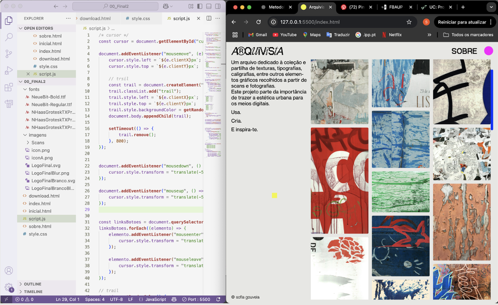
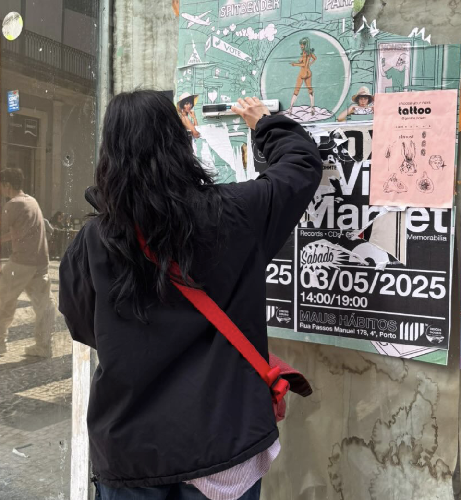
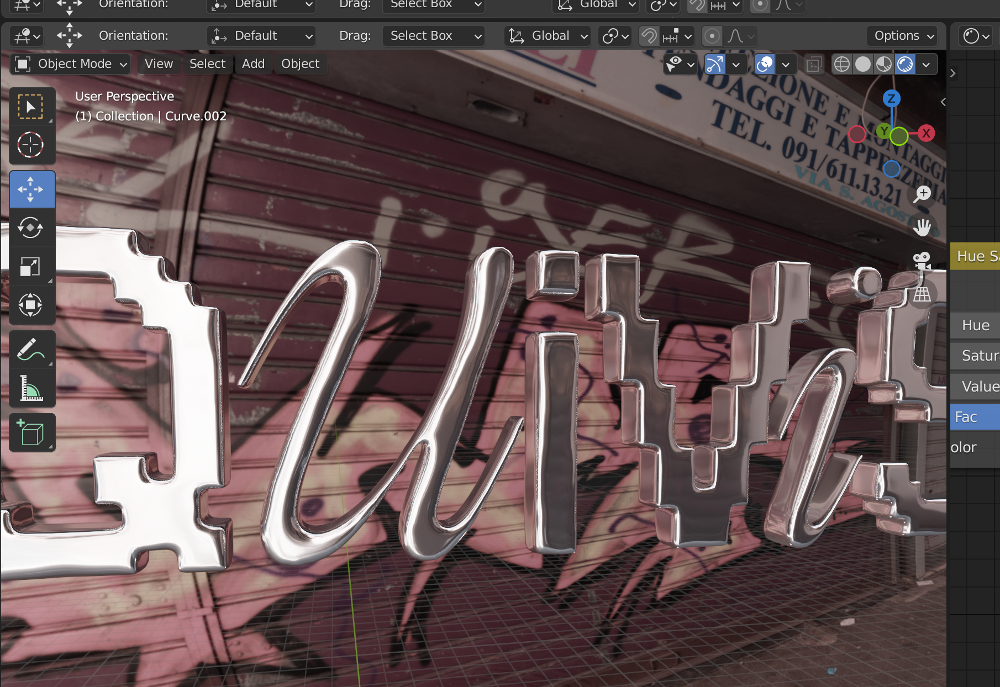
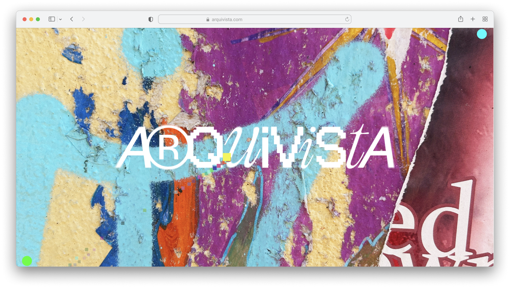

[ Web Design ]
X
“Arquivista” was born from the desire to reconnect the analog and digital realms, highlighting the fleeting beauty of urban culture often overlooked in digital contexts. The project focuses on collecting, preserving, and showcasing ephemeral city elements—textures, typographies, calligraphy, and more—that are frequently erased, replaced, or ignored in urban environments.
By transforming these materials into a freely accessible online library, the project creates a bridge between the physical and digital, offering designers a source of inspiration, reference, and creative experimentation. It rethinks contemporary design’s role in preserving urban visual culture and making it relevant in a digital era.


